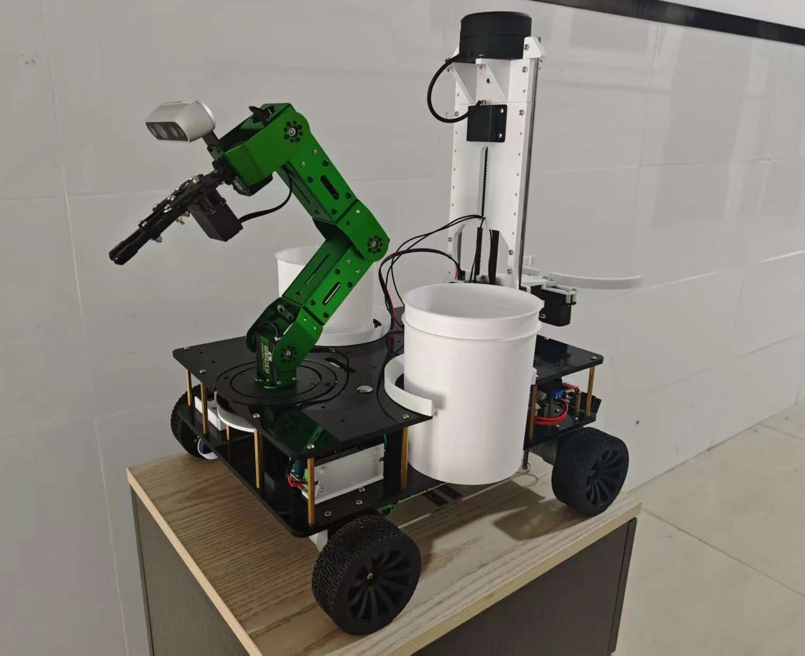
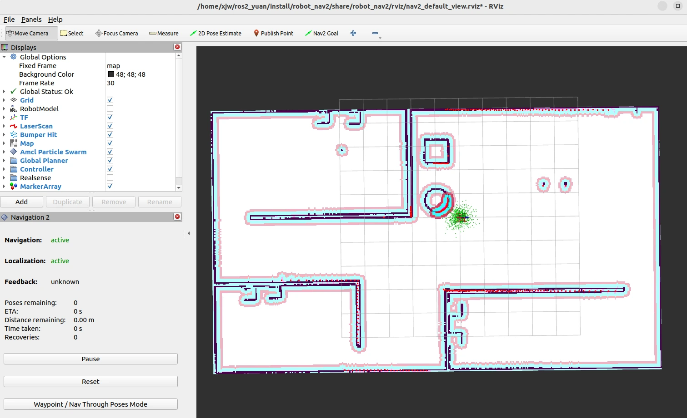
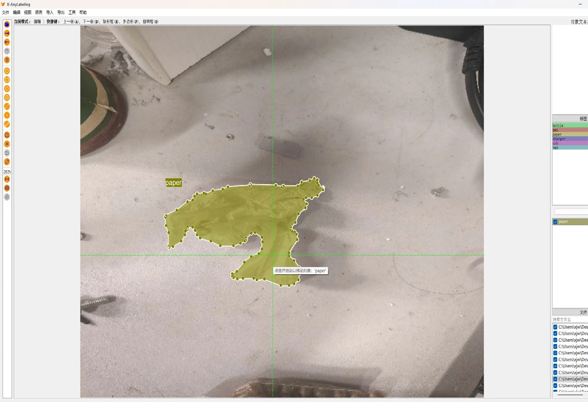
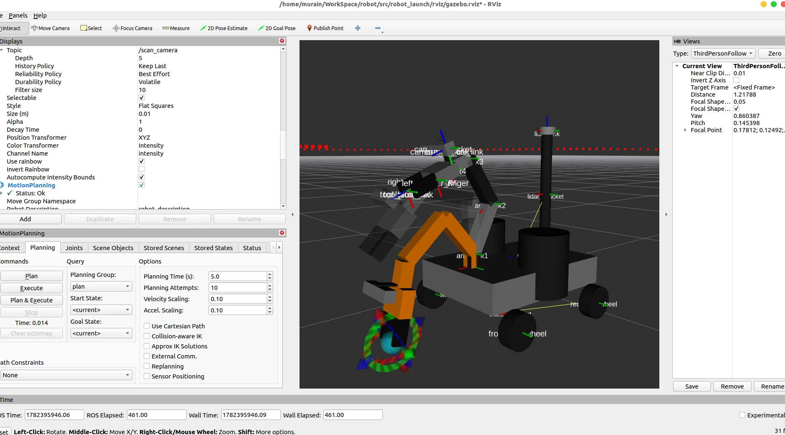
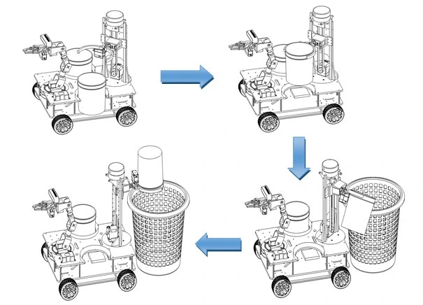
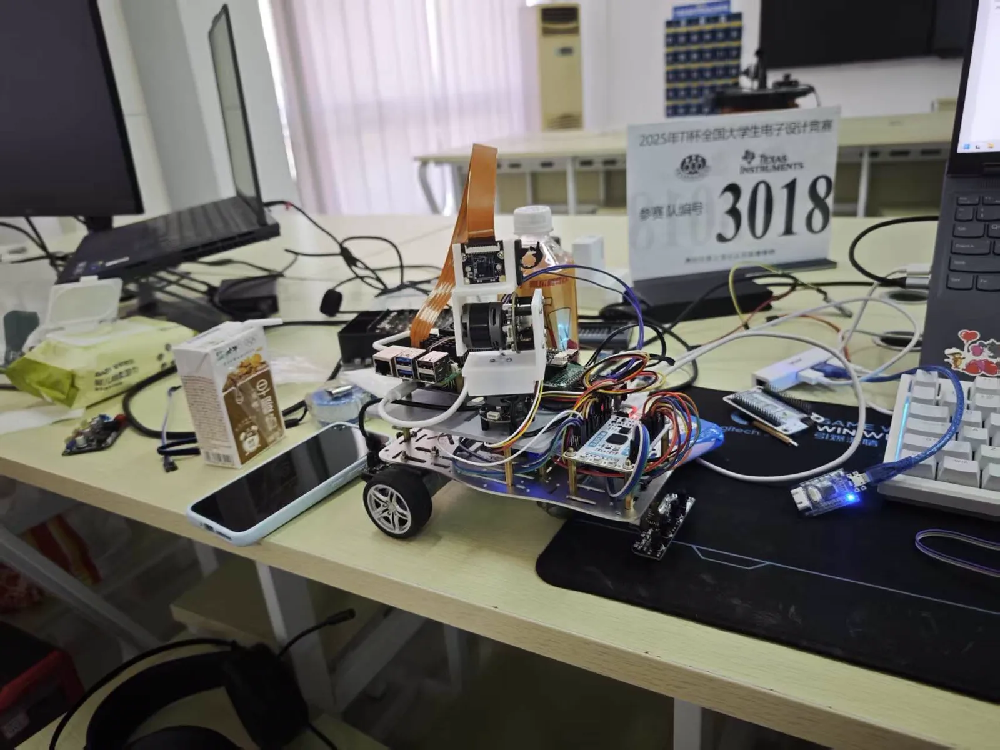
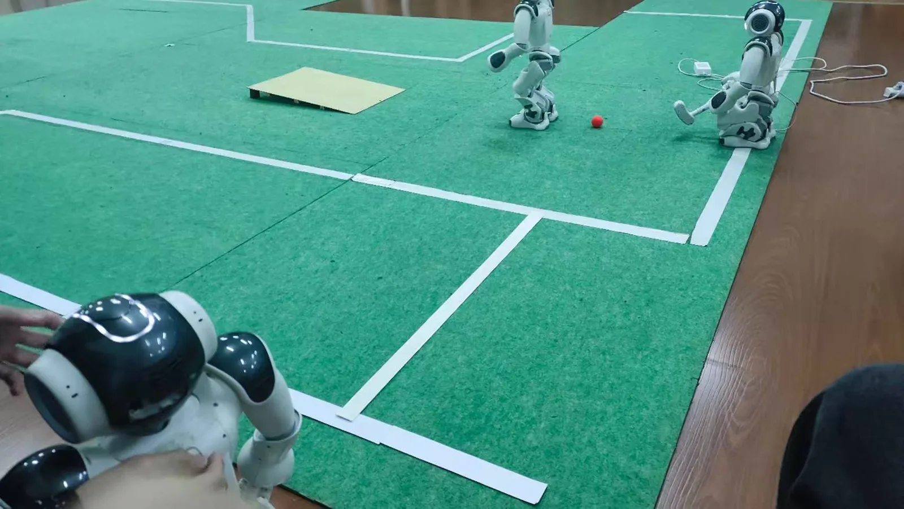
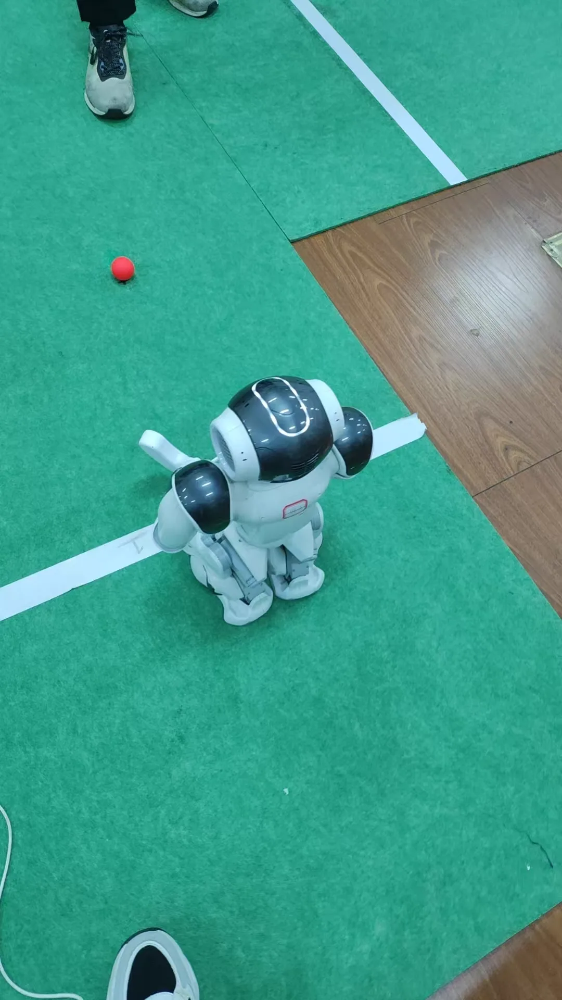
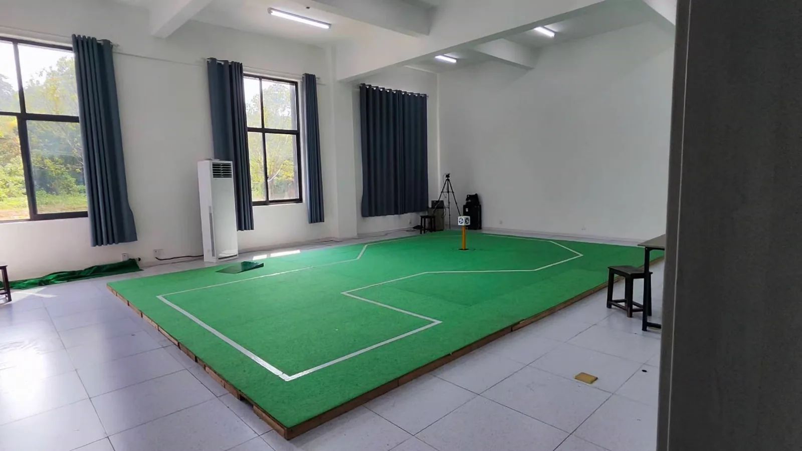

Challenge
处理普通扫地机器人无法解决的离散目标。
面向办公区纸团、塑料瓶和小型遗落物，机器人需要自主完成区域巡航、 目标识别、三维定位、机械臂抓取、双桶分类与自动倾倒，而不是只完成单一算法验证。
近 3 年机器人实验室经历中，我持续参与真实机器人系统的方案设计、ROS2 软件开发、视觉感知、运动规划、嵌入式控制与软硬件联调。多次担任项目负责人， 推动作品从原型验证走向竞赛交付。
核心项目 / FEATURED PROJECT
项目负责人Challenge
面向办公区纸团、塑料瓶和小型遗落物，机器人需要自主完成区域巡航、 目标识别、三维定位、机械臂抓取、双桶分类与自动倾倒，而不是只完成单一算法验证。
My Role
主要工作
System Evidence
以下图片提取自项目设计报告，展示整机结构、软件架构及关键算法模块。






Measured Results
现有数据来自办公区及模拟场地测试，后续将继续补充样本量与成功率统计。
建图定位误差
目标识别准确率
抓取位置误差
OpenVINO 推理效率提升
Project Resources
完整技术报告包含系统架构、算法实现、硬件控制链路与整机测试过程。
从视觉闭环到人形机器人，将算法落实到真实执行机构。
PROJECT 02
项目负责人面向全国大学生电子设计竞赛 TI 杯 E 题，搭建基于树莓派、STM32/MSPM0G3507、 OpenCV 与 FOC 控制的视觉打靶小车。作为项目负责人，负责视觉识别、云台控制、 串口通信协议与打靶流程联调。




PROJECT 03
项目负责人面向机器人高尔夫赛道，基于 NAOqi SDK、OpenCV 与 Python 多线程开发自主寻球、 对准和击球流程。作为项目负责人，负责视觉识别策略、运动决策和比赛现场联调。
PROJECT 04
项目负责人面向桌面陪伴式交互场景，搭建集视觉识别、手势交互与机械臂跟随于一体的智能台灯原型。 作为项目负责人，负责整体方案设计、视觉算法集成、控制逻辑设计与演示联调。

围绕移动操作机器人构建的软硬件能力组合。
OpenCV、YOLO、MediaPipe、PyTorch、RealSense、ONNX、OpenVINO
多节点架构、Launch、TF2、ros2_control、Action、硬件接口
Navigation2、SLAM、AMCL、EKF、MoveIt2
STM32、ESP32、FreeRTOS、PID、UART、CAN、MQTT、HTTP
SolidWorks、URDF、XACRO、Gazebo、机械结构设计与整机集成
C/C++、Python、Git、Docker、模块化开发与系统调试
覆盖人工智能、机器人、嵌入式与程序设计，形成从省赛到国赛的持续竞赛成果。
项目负责人 国赛入围
项目负责人 人工智能实践赛国家二等奖、省级一等奖
嵌入式设计与开发全国三等奖、省级一等奖 · 个人参赛
项目负责人 机器人高尔夫赛道省级二等奖
项目负责人 技能赛省级二等奖
项目负责人 省级大创立项
微课与教学辅助赛国家二等奖、省级一等奖 · A* 算法项目
C/C++ 程序设计省级二等奖 · 个人参赛